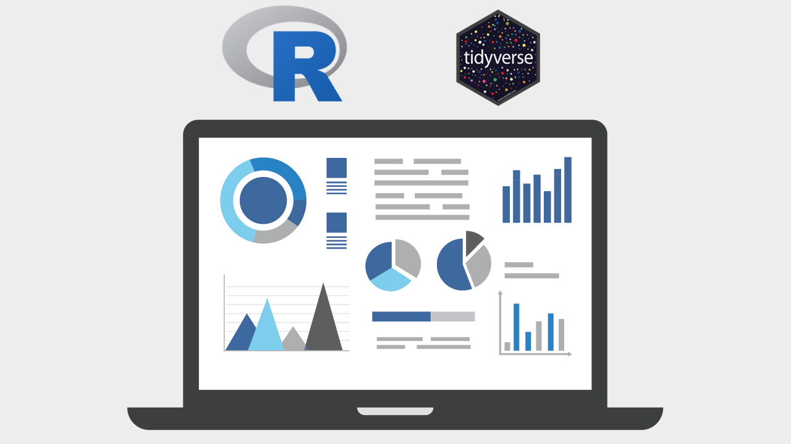

Descripción
Bienvenidos a este curso de introducción a R.
Este curso está indicado para personas de nivel principiante e intermedio, y para aquellos usuarios que quieran aprender a utilizar R con las herramientas más actuales.
En este curso aprenderéis a utilizar el lenguaje de programación R utilizando datos reales. Esto es algo crucial, ya que el uso de datos reales os ayudará a ver como vamos afrontando los problemas que van apareciendo a lo largo del ciclo del análisis de datos.
En este curso aprenderéis a programar en R programando. En los más de 100 vídeos de este curso, apenas 10 vídeos serán clases teóricas para explicar ciertos conceptos que lo merecen, mientras que el resto serán vídeos de código. Aprenderéis técnicas que se utilizan en 2023, con las últimas actualizaciones de los paquetes utilizados.
Requisitos previos
No se necesitan requisitos previos.
Contenidos del Curso
Sección 00 - Introducción al curso
- Introducción al curso
- Configuración del entorno
- Material del curso
Sección 01 - Comenzando
- Interfaz de RStudio
- Instalar y leer paquetes
- Tipos de dato y estructuras de datos
- Indexar con base R
- Ficheros
- Leer y exportar formatos básicos
Sección 02A - Datos de trabajo
- Datos de trabajo
- Manipulación de datos básico (select, filter, mutate ...)
- Uso de los paquetes dplyr y tidyr
- Uso de verbos predicado
- Transformación de datos
- Uniones (left join, right join, ...)
- Funciones CASE WHEN
- Formato largo y formato ancho
- Manipulación de datos avanzado
- Manipulación de datos de tipo cadena de texto
- Uso del paquete stringr
- Corrección de errores y preparación de datos
- Funciones vectorizadas
- Detección de casos
- Separar/unir columnas con tidyr
- Manipulación de datos de tipo categórico
- Uso del paquete forcats
- Definición de factor
- Modificación de valores de factores
- Reordenar factores
- Valores ausentes
- Manipulación de datos de tipo fecha
- Uso del paquete lubridate
- Componentes de una fecha
- Análisis de fechas
Sección 03 - Visualización con ggplot2
- Gramática de gráficos
- Estructura de gráficos
- Gráficos múltiples
- Gráficos interactivos
- Geometrías: histogramas, líneas, boxplot, ...
- Extensiones de ggplot2
Sección 04A - Funciones
- Crear funciones simples y avanzadas
- Tipos de argumentos: nombrados y no nombrados
- Exportar funciones
- Uso del paquete purrr
- Iteraciones con funciones map
- Funciones map vs for loop
- Funciones anónimas
- Funciones de reducción
- Función que genera un heatmap dinámico
- Función para correlation funnel
Sección 05 - Compartir con Quarto
- Introducción a Quarto
- Generación de un reporte con las funciones previas
Resultados del Curso
Principios básicos de programación en R
Tipos de dato y estructuras de datos en R
Manipular ficheros desde R
Organización del directorio de trabajo y de los scripts
Aprender a utilizar los paquetes de R más importantes (dplyr, ggplot2, tidyr, fs, …)
Manejar datos de tipo cadena de texto con stringr
Introducción a expresiones regulares
Manejar datos de tipo categórico con forcats
Generar gráficos a través de ggplot2
Generar gráficos interactivos
Entender la gramática de gráficos
Utilizar extensiones de ggplot2
Generar y exportar funciones
Programación funcional con purrr
Iteraciones
Compartir resultados a través de Quarto